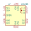
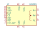
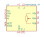
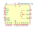
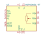
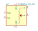
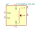

| Symbol |
Description |
AD5253 | Description: Digital potentiometer, 64 position, 4 output, I2C interface, TSSOP-20
Keys: digital potentiometer
Datasheet: https://www.analog.com/media/en/technical-documentation/data-sheets/AD5253_5254.pdf |
AD5254 | Description: Digital potentiometer, 256 position, 4 output, I2C interface, TSSOP-20
Keys: digital potentiometer
Datasheet: https://www.analog.com/media/en/technical-documentation/data-sheets/AD5253_5254.pdf |
AD5272BCP | Description: Digital potentiometer, 1024 position, 1% Resistor Tolerance, I2C interface, LFCSP-10
Keys: digital potentiometer
Datasheet: https://www.analog.com/media/en/technical-documentation/data-sheets/AD5272_5274.pdf |
AD5272BRM | Description: Digital potentiometer, 1024 position, 1% Resistor Tolerance, I2C interface, MSOP-10
Keys: digital potentiometer
Datasheet: https://www.analog.com/media/en/technical-documentation/data-sheets/AD5272_5274.pdf |
AD5274BCP | Description: Digital potentiometer, 256 position, 1% Resistor Tolerance, I2C interface, LFCSP-10
Keys: digital potentiometer
Datasheet: https://www.analog.com/media/en/technical-documentation/data-sheets/AD5272_5274.pdf |
AD5274BRM | Description: Digital potentiometer, 256 position, 1% Resistor Tolerance, I2C interface, MSOP-10
Keys: digital potentiometer
Datasheet: https://www.analog.com/media/en/technical-documentation/data-sheets/AD5272_5274.pdf |

AD5280 | Description: Digital potentiometer, 256 position, single output, I2C interface
Keys: digital potentiometer
Datasheet: https://www.analog.com/media/en/technical-documentation/data-sheets/AD5280_5282.pdf |
AD5282 | Description: Digital potentiometer, 256 position, dual output, I2C interface
Keys: digital potentiometer
Datasheet: https://www.analog.com/media/en/technical-documentation/data-sheets/AD5280_5282.pdf |
AD5290 | Description: Digital Potentiometer 256 steps (SPI control) +- 15V, MSOP-10
Keys: R POT
Datasheet: https://www.analog.com/media/en/technical-documentation/data-sheets/AD5290.pdf |

AD5293 | Description: Digital potentiometer 1024 pos (SPI), TSSOP-14
Keys: R POT
Datasheet: https://www.analog.com/media/en/technical-documentation/data-sheets/AD5293.pdf |
DS1267_DIP | Description: Dual Digital Potentiometer, Serial, 256 Steps, DIP-14
Keys: Dual Digital Potentiometer Maxim
Datasheet: https://datasheets.maximintegrated.com/en/ds/DS1267.pdf |
DS1267_SOIC | Description: Dual Digital Potentiometer, Serial, 256 Steps, SOIC-16
Keys: Dual Digital Potentiometer Maxim
Datasheet: https://datasheets.maximintegrated.com/en/ds/DS1267.pdf |
DS1267_TSSOP | Description: Dual Digital Potentiometer, Serial, 256 Steps, TSSOP-20
Keys: Dual Digital Potentiometer Maxim
Datasheet: https://datasheets.maximintegrated.com/en/ds/DS1267.pdf |
DS1882E | Description: Dual Log Audio Digital Potentiometer, 64 positions, TSSOP-16
Keys: digital potentiometer
Datasheet: https://datasheets.maximintegrated.com/en/ds/DS1882.pdf |
MAX5436 | Description: Low-Drift Digital Potentiometer
Keys: digital potentiometer resistor variable
Datasheet: https://datasheets.maximintegrated.com/en/ds/MAX5436-MAX5439.pdf |
MAX5438 | Description: Low-Drift Digital Potentiometer
Keys: digital potentiometer resistor variable
Datasheet: https://datasheets.maximintegrated.com/en/ds/MAX5436-MAX5439.pdf |
MCP4011-xxxxMS | Description: Low-Cost 64-Step Volatile Digital Potentiometer
Keys: Digital Pot Potentiometer Up Down
Datasheet: http://ww1.microchip.com/downloads/en/DeviceDoc/21978c.pdf, MSOP-8 |
MCP4011-xxxxSN | Description: Low-Cost 64-Step Volatile Digital Potentiometer
Keys: Digital Pot Potentiometer Up Down
Datasheet: http://ww1.microchip.com/downloads/en/DeviceDoc/21978c.pdf, SOIC-8 |
MCP4012-xxxxCH | Description: Low-Cost 64-Step Volatile Digital Potentiometer
Keys: Digital Pot Potentiometer Up Down
Datasheet: http://ww1.microchip.com/downloads/en/DeviceDoc/21978c.pdf, SOT-23-6 |
MCP4013-xxxxCH | Description: Low-Cost 64-Step Volatile Digital Potentiometer
Keys: Digital Pot Potentiometer Up Down
Datasheet: http://ww1.microchip.com/downloads/en/DeviceDoc/21978c.pdf, SOT-23-6 |
MCP4014-xxxxOT | Description: Low-Cost 64-Step Volatile Digital Potentiometer
Keys: Digital Pot Potentiometer Up Down
Datasheet: http://ww1.microchip.com/downloads/en/DeviceDoc/21978c.pdf, SOT-23-5 |
MCP4017-xxxxLT | Description: Low-Cost 128-Step Volatile I2C Digital Potentiometer, SC-70-6
Keys: TWI pot rheostat
Datasheet: http://ww1.microchip.com/downloads/en/DeviceDoc/22147a.pdf |
MCP4018-xxxxLT | Description: Low-Cost 128-Step Volatile I2C Digital Potentiometer, SC-70-6
Keys: TWI pot
Datasheet: http://ww1.microchip.com/downloads/en/DeviceDoc/22147a.pdf |
MCP4019-xxxxLT | Description: Low-Cost 128-Step Volatile I2C Digital Potentiometer, SC-70-5
Keys: TWI pot rheostat
Datasheet: http://ww1.microchip.com/downloads/en/DeviceDoc/22147a.pdf |
MCP4021-xxxxMS | Description: Low-Cost 64-Step Digital Potentiometer with WiperLock™ Technology, MSOP-8
Keys: Digital Pot Potentiometer Up Down
Datasheet: http://ww1.microchip.com/downloads/en/DeviceDoc/21945e.pdf |
MCP4021-xxxxSN | Description: Low-Cost 64-Step Digital Potentiometer with WiperLock™ Technology, SOIC-8
Keys: Digital Pot Potentiometer Up Down
Datasheet: http://ww1.microchip.com/downloads/en/DeviceDoc/21945e.pdf |
MCP4022-xxxxCH | Description: Low-Cost 64-Step Digital Potentiometer with WiperLock™ Technology, SOT-23-6
Keys: Digital Pot Potentiometer Up Down
Datasheet: http://ww1.microchip.com/downloads/en/DeviceDoc/21945e.pdf |
MCP4023-xxxxCH | Description: Low-Cost 64-Step Digital Potentiometer with WiperLock™ Technology, SOT-23-6
Keys: Digital Pot Potentiometer Up Down
Datasheet: http://ww1.microchip.com/downloads/en/DeviceDoc/21945e.pdf |
MCP4024-xxxxOT | Description: Low-Cost 64-Step Digital Potentiometer with WiperLock™ Technology, SOT-23-5
Keys: Digital Pot Potentiometer Up Down
Datasheet: http://ww1.microchip.com/downloads/en/DeviceDoc/21945e.pdf |
MCP41010 | Description: Single Digital Potentiometer, SPI interface, 256 taps, 10 kohm
Keys: R POT
Datasheet: http://ww1.microchip.com/downloads/en/DeviceDoc/11195c.pdf |
MCP41050 | Description: Single Digital Potentiometer, SPI interface, 256 taps, 50 kohm
Keys: R POT
Datasheet: http://ww1.microchip.com/downloads/en/DeviceDoc/11195c.pdf |
MCP41100 | Description: Single Digital Potentiometer, SPI interface, 256 taps, 100 kohm
Keys: R POT
Datasheet: http://ww1.microchip.com/downloads/en/DeviceDoc/11195c.pdf |
MCP42010 | Description: Dual Digital Potentiometer, SPI interface, 256 taps, 10 kohm
Keys: R POT
Datasheet: http://ww1.microchip.com/downloads/en/DeviceDoc/11195c.pdf |
MCP42050 | Description: Dual Digital Potentiometer, SPI interface, 256 taps, 50 kohm
Keys: R POT
Datasheet: http://ww1.microchip.com/downloads/en/DeviceDoc/11195c.pdf |
MCP42100 | Description: Dual Digital Potentiometer, SPI interface, 256 taps, 100 kohm
Keys: R POT
Datasheet: http://ww1.microchip.com/downloads/en/DeviceDoc/11195c.pdf |
MCP4251-xxxx-ML | Description: Dual 8 Bit Digital Pot, SPI, Volatile Memory, QFN-16
Keys: Digital Pot Potentiometer
Datasheet: http://ww1.microchip.com/downloads/en/devicedoc/22060b.pdf |
MCP4251-xxxx-P | Description: Dual 8 Bit Digital Pot, SPI, Volatile Memory, PDIP-14
Keys: Digital Pot Potentiometer
Datasheet: http://ww1.microchip.com/downloads/en/devicedoc/22060b.pdf |
MCP4251-xxxx-SL | Description: Dual 8 Bit Digital Pot, SPI, Volatile Memory, SOIC-14
Keys: Digital Pot Potentiometer
Datasheet: http://ww1.microchip.com/downloads/en/devicedoc/22060b.pdf |
MCP4251-xxxx-ST | Description: Dual 8 Bit Digital Pot, SPI, Volatile Memory, TSSOP-14
Keys: Digital Pot Potentiometer
Datasheet: http://ww1.microchip.com/downloads/en/devicedoc/22060b.pdf |
MCP45HV31-MQ | Description: 7/8-bit single +36V (+/-18V) digital pot, I2C serial interface, volatile memory, QFN-20
Keys: I2C Potentiometer pot digital
Datasheet: http://ww1.microchip.com/downloads/en/DeviceDoc/20005304A.pdf |

MCP45HV31-ST | Description: 7/8-bit single +36V (+/-18V) digital pot, I2C serial interface, volatile memory, TSSOP-14
Keys: I2C Potentiometer pot digital
Datasheet: http://ww1.microchip.com/downloads/en/DeviceDoc/20005304A.pdf |

MCP45HV51-MQ | Description: 7/8-bit single +36V (+/-18V) digital pot, I2C serial interface, volatile memory, QFN-20
Keys: I2C Potentiometer pot digital
Datasheet: http://ww1.microchip.com/downloads/en/DeviceDoc/20005304A.pdf |

MCP45HV51-ST | Description: 7/8-bit single +36V (+/-18V) digital pot, I2C serial interface, volatile memory, TSSOP-14
Keys: I2C Potentiometer pot digital
Datasheet: http://ww1.microchip.com/downloads/en/DeviceDoc/20005304A.pdf |

TPL0401A-10-Q1 | Description: 128-TAPS Single-Channel Digital Potentiometer, I2C Interface, SC-70-6
Keys: Digital Pot Potentiometer I2C
Datasheet: http://www.ti.com/lit/ds/symlink/tpl0401a-10-q1.pdf |

TPL0401B-10-Q1 | Description: 128-TAPS Single-Channel Digital Potentiometer, I2C Interface, SC-70-6
Keys: Digital Pot Potentiometer I2C
Datasheet: http://www.ti.com/lit/ds/symlink/tpl0401a-10-q1.pdf |
X9118 | Description: 100k Digital Potentiometer, 1024 steps, TSSOP-14
Keys: digital potentiometer
Datasheet: http://www.intersil.com/content/dam/Intersil/documents/x911/x9118.pdf |
X9250 | Description: Quad 100k Digital Potentiometer, 256 steps, TSSOP-24/SOIC-24
Keys: potentiometer resistor variable digital
Datasheet: https://www.intersil.com/content/dam/Intersil/documents/x925/x9250.pdf |
X9258 | Description: Quad 50k Digital Potentiometer, 256 steps, TSSOP-24/SOIC-24
Keys: potentiometer resistor variable digital
Datasheet: http://www.intersil.com/content/dam/intersil/documents/x925/x9258.pdf |